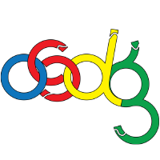

Research Assistant
I have been a part of Precog since May 2020. I've been a part of two research threads as a prt of this.
Firstly, I am working on analysis of Twitter data to understand the actors and their contribution
to online social movements. I'm also working on using hyperbolic embeddings to
represent data for community detection. As a part of this, I've published a python library: hypmaps to
map points between Euclidean and Poincare manifolds.
Teaching Assistant
I was a teaching assistant for the course Operating Systems and Networks
for the Monsoon 2020 semester. I was responsible for conducting, setting and correcting various tutorials, assignments
and quizzes.

Student Mentor
I worked with a group of first-year students to teach the the best web-dev practices and
mentor them in creating a website for the Music Club at IIIT-H.
Open Source Contributor
I worked with the organization CodeZoned based in IIT-Jodhpur over a two-month period
to write the code for the AdaBoost multi-class classification machine learning algorithm. Implementation included writing code for
the GPU in CUDA C.